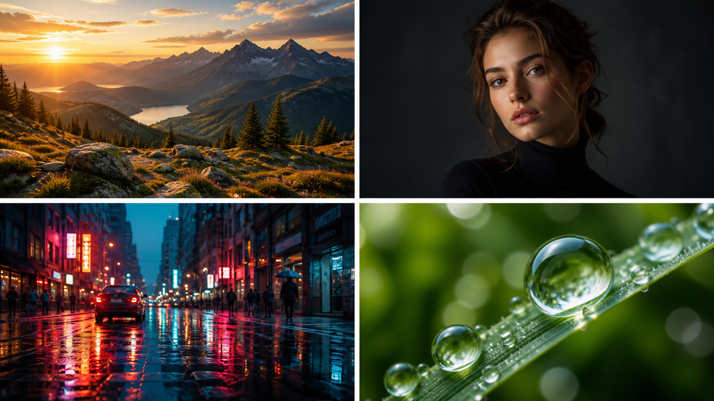

Landscape prompt
Epic Golden Hour Mountain Landscape Prompt
A cinematic landscape prompt built around warm backlight, mountain scale, storm clouds, and realistic camera language.

Copy Prompt
A breathtaking golden hour landscape, towering mountain range bathed in warm amber light, dramatic storm clouds parting, shot on Hasselblad 500C, 85mm lens, f/2.8, ultra-detailed, RAW photography aesthetic, volumetric light rays, cinematic color grading
Why it works
The prompt combines subject scale, exact light behavior, camera feel, and post-processing. The camera and lens terms give the model a photographic anchor, while the storm clouds and volumetric rays add drama.
Quick variations
More realistic
Add: natural contrast, no oversaturation, documentary travel photography, true-to-life colors.More cinematic
Add: anamorphic framing, subtle lens flare, 2.35:1 crop, dramatic color separation.